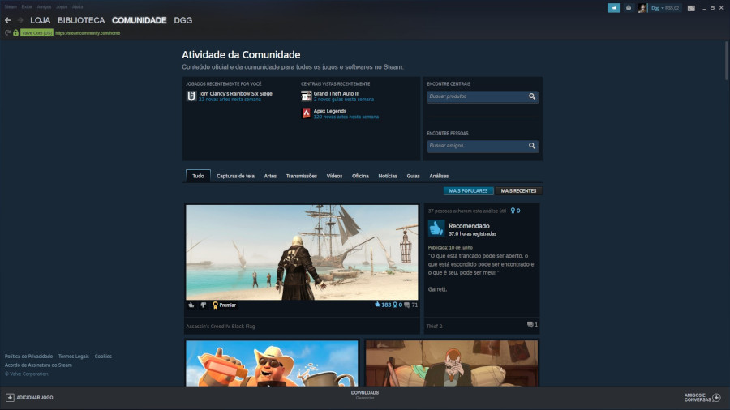

O que é Steam?
Entenda o que é Steam, como a plataforma surgiu, como funciona e tornou-se a principal loja digital de jogos para computador.
O Steam é uma plataforma de distribuição de jogos digitais para computadores (Windows, macOS e Linux). Foi uma das primeiras de seu gênero a ser lançada e permite que consumidores comprem ou ativem jogos dentro do serviço. Possui um programa cliente, que deve ser instalado no computador, para que os jogos possam ser executados, mantendo tudo atualizado. Além de loja digital, funciona também como rede social. Atualmente o Steam conta com aproximadamente 65 milhões de usuários ativos, e tem médias de acesso diário de 8,5 milhões de contas ao mesmo tempo. O programa também conta com um sistema de amigos, que permite ao usuário criar uma rede de contatos online, com os quais pode jogar, trocar itens, interagir no chat, transmitir ao vivo (gameplays) e mais...
Historia do Steam
O Steam surgiu originalmente como uma ideia para resolver problemas de atualizações dos títulos da Valve. Depois de um tempo, ganhou popularidade no universo dos games e se consolidou no mercado. O beta do Steam foi lançado em 2002 pela Valve Corporation, uma desenvolvedora de jogos fundada por Gabe Newell e Mike Harrington, dois ex-programadores da Microsoft (Newell é o presidente da companhia desde sempre).
O software foi originalmente planejado como um cliente para distribuir atualizações dos jogos da própria empresa, especificamente Counter-Strike. Em 2003, a versão final foi lançada, após um grande número de testadores avaliarem o software (entre 80 mil e 300 mil, segundo a Valve) Com o tempo, outros títulos da Valve ligados a serviços de terceiros passaram a serem suportados pelo Steam, até o lançamento de Half-Life 2, o primeiro que exigia a instalação do Steam para rodar, crucial para a popularidade da plataforma.
Pouco depois, começaram os planos de expansão. Em 2005, a Valve começou a negociar acordos com outras desenvolvedoras para que estas passassem a vender seus jogos pelo Steam, com uma comissão de 30% revertida à Valve. A partir de 2007, grandes estúdios como id Software (DOOM), Capcom (Street Fighter) e Eidos Interactive (Tomb Raider), começaram a lançar seus títulos no Steam, o que estimulou outros estúdios. Hoje, a plataforma é a mais popular para jogos de computador, com uma biblioteca enorme de títulos AAA e independentes, cujos estúdios sempre foram apoiados pela Valve.
Como Funciona?
O Steam funciona como um cliente, loja digital e rede social. Você pode comprar jogos com cartão de crédito, débito em conta, créditos em carteiras virtuais ou via boleto bancário. O jogo adquirido vai para sua “Biblioteca”, e só rodará após instalação do aplicativo Steam, chamado como Cliente Steam. Ele é compatível com Windows, macOS e Linux — embora nem todos os jogos sejam.
Se você usa macOS ou Linux será limitado às opções de jogos compatíveis com seu sistema; já o Windows é compatível com todo o acervo da loja. Você pode também adquirir jogos de outras lojas ou fontes, na forma de códigos de resgate (uma chave com 15 caracteres) ou relacionar jogos que não estejam disponíveis na loja da Valve com a sua biblioteca.
É importante lembrar que nem todos os jogos para computador estão disponíveis no Steam, por serem ligados a clientes rivais como o popular Fortnite, que pertence à Epic Games; os títulos da EA (Battlefield, Mass Effect, FIFA, Star Wars: Battlefront), ao Origin; e os jogos da Blizzard (World of Warcraft, Starcraft II, Overwatch), ao cliente da Battle.net.
Por fim, a plataforma possui uma grande comunidade e você pode se conectar a seus amigos através do seu chat dedicado, inclusive pelo app para iPhone ou Android.
Agora que já conhece a plataforma, aproveite para colocar seus jogos em dias!